<html>
<head>
    <title>chi-town</title>
    <style>
    svg{
        position:absolute;
        top:0;
        left:60px;
        height: 400px;
        width:400px;
    }
    html {
        position:relative;
      background: url(resources/chiTown/MnOMjMi.jpg) no-repeat center center fixed;
      -webkit-background-size: cover;
      -moz-background-size: cover;
      -o-background-size: cover;
      background-size: cover;
    }
    </style>
    <script src="resources/jquery-2.1.1.min.js"></script>
    <script src="resources/walkway.min.js"></script>
</head>
<body>
    <!--  -->
<?xml version="1.0" encoding="utf-8"?>
<!-- Generator: Adobe Illustrator 16.0.0, SVG Export Plug-In . SVG Version: 6.00 Build 0)  -->
<!DOCTYPE svg PUBLIC "-//W3C//DTD SVG 1.1//EN" "http://www.w3.org/Graphics/SVG/1.1/DTD/svg11.dtd">
<svg version="1.1" id="Layer_1" xmlns="http://www.w3.org/2000/svg" xmlns:xlink="http://www.w3.org/1999/xlink" x="0px" y="0px"
     width="737px" height="950.5px" viewBox="0 0 737 950.5" enable-background="new 0 0 737 950.5" xml:space="preserve">
<path fill="none" stroke="#6B6767" stroke-width="2" stroke-miterlimit="10" d="M342.498,816.523l-26.413-121.893L335.672,550.5H406
    l2.004,13.417l14,93.751l-28.333,5l-3.333-14l15.667-82.333l-1.333-10l-19.667,82.333l-9.333,3.333l-32.333-86.667l-2,2l26.333,90
    l-6.333,26l-37,16.333l-0.333,6l36.333-9.333l8.792,21l-22.125,96.333l2.333,1.667l27.333-96.333l9-4l20,59.667l2.667-4
    l-18.667-67.797c0,0-2-4.371,1.667-4.371s13.663,0,13.663,0l2.004,4H415l-5.663,74.501l-61.333,43"/>
<path fill="none" stroke="#6B6767" stroke-width="2" stroke-miterlimit="10" d="M424.67,659.668l10.667-3.333c0,0,24-28,55,3.333
    c-1.333,0,27.333,8.333,27.333,8.333l5.333,3.667l15.333-125.333l39.667,4.166l2.333,118.834l-11,118.333l-33.667,48.333
    l-8.333-120.667l21.667-12l3,20l-15,100.667l2.667,0.333l20.667-100.333l6,59.667l3-18.667l-2.333-54.333c0,0,8.333-26.334,6-29.667
    s4.667-7,4.667-7l-0.667-7l-7.667,4.667l7.667-87.333l-1-26.667l-13.333,90.667l-15.333-92.667l-3.667,6.333l10,95.333
    l-4.667,31.333l-19.667,16l-3,8l-4.333-15l-32.333,6.667c0,0-31.61,29.99-61-6.333c1-1-11-3.333-11-3.333l-6.667,0.333"/>
</svg>

    <script>
        var svg = new Walkway({
            selector:"#Layer_1",
            duration:'3000',
            easing:'linear'
            });
        function animate(){
            var top = $('svg').css("top");
            $('svg').animate({


                height:"0%",
                top: "340px",
                left: "600px",
                easing: 'swing'
            }, 3000);
        }

        svg.draw(function(){
            animate();
        });

    </script>
</body>
</html>